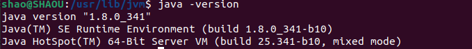

Ubuntu基本配置
修改apt源
cd /etc/apt
sudo cp sources.list sources.list.bak
sudo chmod +777 sources.list
sudo gedit sources.list
# 将其中内容替换为Ubuntu清华源
sudo apt-get update下载vim、配置
sudo apt install vimVim 的全局配置一般在/etc/vim/vimrc 或 /etc/vimrc，对所有用户生效。用户个人的配置在~/.vimrc 。
创建 ~/.vimrc 文件，在其中添加：
set syntax=on
set mouse=a
set encoding=utf-8
set t_Co=256
set autoindent
set cindent
set tabstop=4
set expandtab
set softtabstop=4
set shiftwidth=4
set ruler
set hlsearch
filetype indent on安装openssh-server
Ubuntu 默认已安装了 SSH client，此外还需要安装 SSH server。
sudo apt-get install openssh-server安装后，可以使用如下命令登陆本机：
ssh localhost
# 执行后会在 ~ 下创建 .ssh 目录退出登陆：
exit这样登陆是需要每次输入密码的，我们需要配置成SSH无密码登陆比较方便。
利用 ssh-keygen 生成密钥，并将密钥加入到授权中：
ssh-keygen -t rsa # 生成密钥，保存在 ~/.ssh目录中（id_rsa、id_rsa.pub）
cd .ssh
cat ./id_rsa.pub >> ./authorized_keys此时再用 ssh localhost 命令，无需输入密码就可以直接登陆了。
Java环境配置
用虚拟机中的浏览器下载 jdk-8u341-linux-x64.tar.gz，默认下载路径为 ~/Downloads。
cd /usr/lib
sudo mkdir jvm
cd ~/Downloads
sudo tar -zxvf ./jdk-8u341-linux-x64.tar.gz -C /usr/lib/jvm # #把JDK文件解压到/usr/lib/jvm目录下此时 /usr/lib/jvm 下有了一个 jdk1.8.0_341 目录。
下面设置环境变量：编辑 ~/.bashrc 文件（本用户的环境变量配置文件），添加以下内容：
export JAVA_HOME=/usr/lib/jvm/jdk1.8.0_341
export JRE_HOME=$JAVA_HOME/jre
export CLASSPATH=.:$JAVA_HOME/lib:$JRE_HOME/lib
export PATH=$JAVA_HOME/bin:$PATH保存后执行以下命令，使配置立即生效。
source ~/.bashrc使用命令 java -version 来判断是否安装成功。
